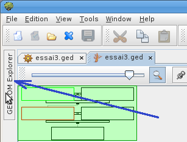
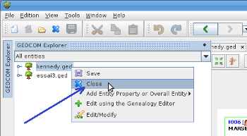

How to close a genealogy
Each time I run Ancestris, my genealogy is well opened, but I
have also the Kennedy genealogy running. How do I get rid of
it? How do I close it, to have just my genealogy?
Put the focus on the genealogy you want to close. Then from
the main menu, click on "File" - "Close". That's
all. Easy. Next time you run Ancestris it won't be opened
anymore.
Another way is to use the Gedcom explorer. Check on the left
of the main window. You will see a kind of button wich is named
GEDCOM explorer. Put the pointer of your mouse on it, it will
open the explorer.

Right click on the name of the genealogy
you want to close. Click on "Close".

That's all.